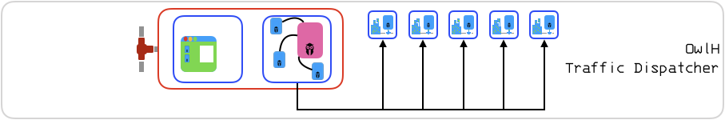

OwlH PCAP collector and dispatcher configuration for load balance your traffic analysis¶
What is OwlH Dispatcher configuration?¶
When you want to analyze traffic in different NIDS systems because traffic volume is too high for a single NIDS.
There are multiple possible configurations. Mostly you need to think about few things:
- Where do you want to do dispatcher?
- Usually it is done in OwlH Master component
- You can think about use OwlH Node too
- How to get traffic?
- From socket - When systems forward traffic to your
- From local interface connected to a SPAN port, Mirror Port
- When running in AWS using VPC Mirror you should configure a VxLAN interface and collect traffic from there
- Where to store PCAP files and how big they will be?
- By default OwlH Master will use /tmp/dispatcher to save temporal PCAP files until they are moved to final destination
- Default PCAP size is set by time, so we will create PCAP files as big as 1 min of traffic capture.
- There is also possible to define BPF filter to store only the useful traffic.
- Who will analyze traffic?
- There are two possible PCAP analyzers
- Pool of nodes -> that pool of resources will receive one PCAP each using a round-robin algorithm. You can set as many OwlH Nodes as needed in a pool.
- Alone consumers -> that resource will receive all the PCAPs. It can be not only an OwlH Node, it can be a Moloch In folder, or a Forensic Storage Resource. You can set as many Alone consumers as needed.
- You can setup them in the dispatcher JSON configuration file
- a PCAP file will be sent to:
- One OwlH Node from the pool
- AND to all OwlH Nodes or any other destinations defined as Alone
- How PCAPs will be shared?
- Best approach right now is to configure an NFS resource in your OwlH Node and share it with your OwlH Master.
- NFS Resources will be mounted as needed in your Master.
- OwlH Master Dispatcher will do the job moving PCAPs to the right folders.
- After PCAP is manage and sent to the right folders.
- How to analyze traffic from an OwlH Node in a Pool?
- You will configure your OwlH Node with Suricata and Zeek
- Also, you will configure a local dummy interface called owlh. You will setup Suricata and Zeek to use this interface as listening interface.
- Dispatcher in OwlH Node will be reading the NFS shared folder where OwlH Master will copy the new PCAPS
- As soon as a PCAP file is verified it will be re-injected to the owlh interface and traffic will be analyzed by Suricata and Zeek
- After PCAP file is manage you can decide to remove it or to keep and move to an output folder
- After Suricata and Zeek
- Normal traffic flow will continue as in any other configuration.